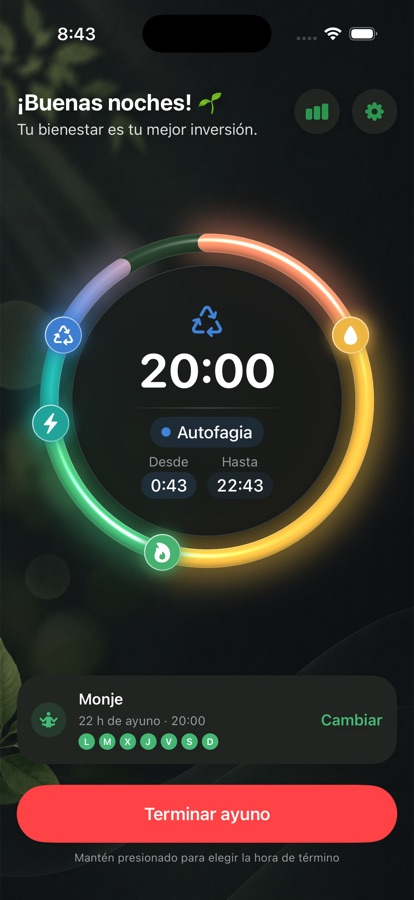
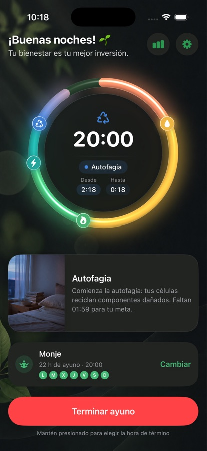
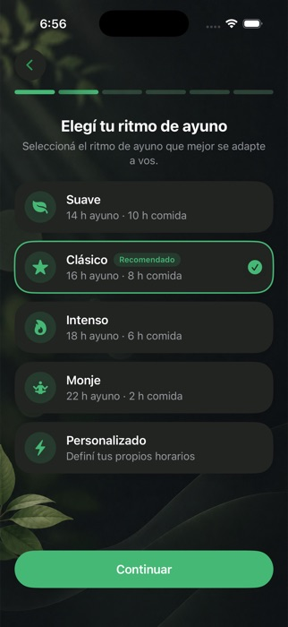
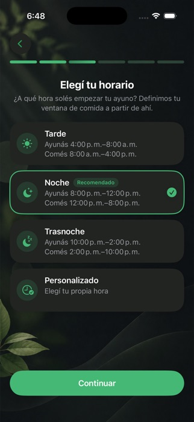
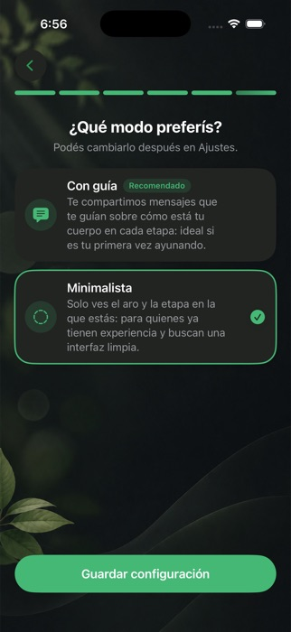

Tu ayuno.
Tu ritmo.
Fastitude te ayuda a construir una rutina de ayuno que se adapta a tu vida, no al revés.
Privada por diseño. Sin cuenta. Sin nube. Sin anuncios.
Descargar en la App Store
Fastitude te ayuda a construir una rutina de ayuno que se adapta a tu vida, no al revés.
Privada por diseño. Sin cuenta. Sin nube. Sin anuncios.
Descargar en la App Store
Todo lo que necesitás para mantener el foco. Nada de lo que no.
Tu tiempo de ayuno siempre es claro. Sin etapas confusas ni ruido innecesario.
Mirá tu progreso desde la pantalla de bloqueo, la Isla Dinámica o la pantalla de inicio.
Elegí tus propias ventanas de ayuno o dejá que Fastitude te ayude a armar un ritmo.
Entendé cómo cambian tus hábitos de ayuno con el tiempo.
Empezá cuando estés listo. Fastitude se ocupa tranquilamente del resto.

No existe un horario de ayuno perfecto. Tu rutina tiene que funcionar con tu vida.

Contale a Fastitude cómo es tu día.

Obtené un horario basado en tu rutina.

Usá la guía cuando la necesitás. Simplificá cuando no.
Cada ayuno se registra automáticamente, para que veas tu constancia y tus patrones con el tiempo.

Mirá exactamente cuándo ayunaste, no solo cuánto tiempo.

Hitos que aparecen a medida que sos constante.
Tu historial de ayunos se queda en tu dispositivo.
Simple, privada, y pensada para tu vida.
Descargar en la App StoreNo necesitás cuenta.